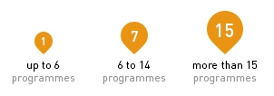

Make your search for programmes using the filter options on the left side. You may select as many funders or VGGT chapters/sub-chapters as you like, but only one partner country can be selected at a time.
If a specific partner country is selected, the result of your search will initially appear in a pop-up in the Map. Further details of the programmes in that country will be shown at the bottom of the page.
You may also click directly in a given country in the Map. Again, a pop-up will inform the funding amount of programmes in that country and further details can be seen by clicking on more or show programmes
If you wish to know all the programmes funded by one or more specific donors, select only the donors and click on show programmes to see the detailed list at the bottom.

The size of the pins in the Map indicates the rough volume of programmes in each country.
Summaries of the VGGT chapters were prepared by the Secretariat to facilitate navigation in the Map. In case of doubt, the original VGGT text will prevail and be consulted. Original funding amounts given in a currency other than US dollar were converted, in most cases, using the exchange rate of the data insertion date. Where indicated, funding figures may represent the full budget of a larger programme where land governance is one of several components. Hence, the sum total of funding provided by all programmes in the database is only an approximation.
You have more questions? Let us know!
This database and map is the result of collaborative efforts by members of the Global Donor Working Group on Land, a network of 24 bilateral and multilateral donors aiming to improve land governance and enhance transparency and coordination. It is hosted by the Global Donor Platform for Rural Development, which acts as Secretariat of the working group. Each donor is responsible for managing and updating the information contained in the database on a regular basis – the data is updated at least twice a year, around February and August.
Any questions regarding specific programmes and projects should be addressed to the relevant member of the Global Donor Working Group on Land:
This part provides guidance which applies to all situations of governance of tenure. It sets out guiding principles on responsible land tenure and addresses aspects of governance of tenure with regard to rights and responsibilities; policy, legal and organizational frameworks; and delivery of services.
Determines that states should:
Also guides non-state actors (including business enterprises) to respect human rights and legitimate tenure rights. They should act with due diligence to avoid infringing on the rights of others, and assess and address any adverse impacts, including cooperating in non-judicial mechanisms.
Captures 10 human rights principles relevant for all tenure related activities.
Stresses that legal recognition should be given to legitimate tenure rights that are not currently protected by law, that legitimate tenure rights should be protected, and that all forms of discrimination related to tenure rights should be removed. Also demands that states should ensure that all actions regarding tenure and its governance are consistent with their existing obligations under national and international law.
Encourages states to provide and maintain policy, legal and organizational frameworks that promote responsible governance of tenure of land, fisheries and forests (reflecting their interconnected relationship) and to ensure that these frameworks recognize and respect legitimate tenure rights, are non-discriminatory, participatory, and address the obstacles faced by women and girls with regard to tenure. Also suggests that states should clearly define the roles and responsibilities of implementing agencies, ensure coordination between them, as well as with local governments, indigenous peoples and other communities with customary tenure systems, and publicize opportunities for civil society, private sector and academia to contribute to developing and implementing policy, legal and organizational frameworks.
Recommends that states should provide prompt, efficient, accessible and non-discriminatory services to protect tenure rights, to promote and facilitate the enjoyment of those rights, and to resolve disputes. Public agencies and judicial authorities should serve the entire population, including those in remote locations. Services should be timely and affordable, and respond to the needs of those who request the services. States and non-state actors should endeavour to prevent corruption with regard to tenure rights, particularly through consultation and participation, rule of law, transparency and accountability. States should also promote the sharing and wide distribution of tenure related information and inform users of their rights and responsibilities.
Addresses the legal recognition of tenure rights of indigenous peoples and other communities with customary tenure systems, as well as of informal tenure rights. Also covers the initial allocation of tenure rights to land, fisheries and forests that are owned or controlled by the public sector.
Stresses that when States recognize or allocate tenure rights, they should put safeguards in place to avoid infringing on or extinguishing the tenure rights of others. States should first identify all existing tenure rights and right holders, whether recorded or not. Men and women should enjoy the same rights when tenure rights are recognized. Also suggests that people whose tenure rights are recognized or who are allocated tenure rights should have full knowledge of their rights. Where it is not possible to provide legal recognition of tenure rights, States should prevent forced evictions that are inconsistent with their international human rights obligations.
Recommends that States should recognize and record legitimate tenure rights to land, fisheries and forests that are publicly owned or controlled. States should determine which of the land, fisheries and forests they will retain and use, and which of these resources will be allocated for use by others and under what conditions. States should also develop and publicize policies covering the use and control of land, fisheries and forests retained by the public sector as well as the the allocation of tenure rights to others in transparent, participatory ways, using clear and understandable procedures, thereby recognizing the range of tenure rights and rights holders.
Emphasizes that particular attention should be given to the recognition and protection of customary tenure rights. States and other parties should hold good faith consultations with indigenous peoples and other communities before initiating any project that affects the resources for which the communities hold rights (for indigenous peoples this includes obtaining their free, prior, and informed consent, FPIC). Communities with legitimate customary tenure rights should not be forcibly evicted from ancestral lands. States should consider adapting their policy, legal and organizational frameworks to recognize customary tenure systems, thereby ensuring full and effective participation.
Encourages States to acknowledge the emergence of informal tenure, particularly where it arises from large-scale migrations. States should give legal recognition to informal tenure through participatory and gender-sensitive processes where this is possible, and where it is not possible, States should prevent forced evictions.
Provides guidance for when tenure rights are transferred or changed in various ways after their initial recognition or allocation, including markets; investments; land consolidation and other readjustment approaches; restitution; redistributive reforms; and expropriation and compensation.
Recommends that States should establish transparent, efficient and fair market operations including legislative and regulatory systems, provide non-discriminatory access to markets, and prevent uncompetitive practices and harmful impacts on vulnerable groups resulting from land speculation, concentration and abuse of customary forms of tenure. Also demands that states should support the establishment of appropriate and reliable land-tenure recording systems so that land transaction costs can be conducted efficiently. State and non-state actors should adhere to applicable ethical standards.
Recognizes that responsible investments are essential to improve food security. Investments should do no harm, strive to contribute to socio-economic and rural development, and safeguard against holders of legitimate tenure rights being dispossessed of their rights, particularly with respect to large-scale transactions. Investors have the responsibility to respect national laws and legislation and recognize and respect tenure rights of others and the rule of law.
Encourages States to consider ways to improve the layout and use of parcels or holdings, while ensuring that all participants are at least as well off after the schemes compared with before. Readjustment purposes should fit particular local requirements and establish appropriate safeguards. States may consider the establishment of land banks, including in environmental protection and infrastructure projects and improvement of fragmented structures.
Demands that States should consider providing restitution for the loss of legitimate tenure rights, where possible by returning the original parcels to the people who suffered the loss. Where the original parcels cannot be returned, adequate compensation in the form of money, alternative parcels or a combination should be provided.
Recommends that states may consider implementing redistributive reforms in order to facilitate broad and equitable access to land, fisheries and forests. Such reforms should follow the rule of law in line with national laws and procedures, facilitate consultations, assess and monitor impacts, respect existing legitimate tenure rights, and provide just compensation, means for conflict resolution, and the required support to beneficiaries, e.g. access to credit, inputs and technical assistance in rural extension. They may also consider land ceilings.
States that the expropriation of tenure rights is only legitimate for clearly defined and lawful public purposes, and can only be carried out in a transparent and participatory manner. Fair valuation and prompt compensation for the loss of tenure rights should be ensured by states. Evictions should be avoided and, if justified, be conducted consistent with relevant human rights obligations.
Covers the administrative aspects of effective, including records of tenure rights; valuation; taxation; regulated spatial planning; resolution of disputes over tenure rights; and transboundary matters.
Stresses the importance of providing systems for recording, maintaining and publicizing all types of tenure rights to improve tenure security. People should be able to record their tenure rights without discrimination. Particular care should be taken to prevent the registration of competing rights. Implementing agencies should adopt simplified procedures and locally suitable technologies.
Focuses on the provision of fair and timely valuations of tenure rights for specific purposes, such as markets, security for loans, investments, expropriation and taxation. Valuation systems should take non-market values into account. States should develop and publicize national valuation standards.
Encourages states to use their power to raise tax revenue to contribute to the achievement of their broader objectives. Recommend that states should strive to develop policies, laws and organizations frameworks regulating the taxation of tenure rights and that taxes should be administered efficiently and transparently. Tax policies and laws related to tenure rights should be used where appropriate to provide financing for decentralized levels of government and the local provision of services.
Recognizes that the regulation of spatial use (such as land use) affects tenure rights by reducing the options for using the natural resources. Spatial planning should be carried out in ways that reconcile and harmonize different objectives for the use of the natural resources, thereby taking into account the promotion of diversified sustainable land management. Spatial planning should be coordinated between different state levels and developed in gender-sensitive ways and with wide public participation, considering customary tenure systems.
Stresses the importance of access to timely, affordable and effective means of resolving disputes over tenure rights, including the right to appeal. Access to justice may be provided through judicial and administrative bodies, specialized tribunals and alternative forms of dispute resolution, especially at the local level. Legal assistance should be provided to vulnerable persons to ensure safe access for all to justice without discrimination.
Recognizes that while tenure is a matter of national sovereignty, there may be transboundary aspects, e.g. involving pastoralists whose traditional grazing areas or seasonal migration routes lie across international boundaries. In cases where transboundary matters arise, the affected parties should work together to protect such tenure rights. States should support this by harmonizing legal standards, coordinating with regional bodies and by strengthening existing international measures that administer tenure rights.
The earlier parts of the Guidelines address mostly “every day” situations, whereas this part addresses extreme situations where people could be displaced on a large scale. In all cases, States should strive to prepare and implement strategies and actions in consultation with and participation of people who may be displaced. The provision of an alternative place to settle should not jeopardize the livelihoods of others.
Encourages policies and laws on tenure to take into account possible strategies and actions to deal with the effects of climate change. States should protect tenure rights holders against the effects of climate change, thereby particularly considering effects on and participation of small-scale farmers, vulnerable people and those threatened by displacement.
Recommends that tenure is addressed in disaster preparedness programmes, and in the emergency and reconstruction phases following natural disasters. The tenure rights of displaced persons should be particularly protected.
Stresses that tenure problems should be resolved through peaceful means by all parties in order that they do not lead to conflicts. When conflicts arise, States and others should try to protect tenure rights and related records in accordance with national and international law. When conflicts cease, States should ensure that the restitution and resettlement programmes support lasting solutions. Refugees and displaced persons should receive particular attention.
Provides guidance on how the principles and practices of the Guidelines can be promoted, implemented, monitored and evaluated
Suggests that states have the responsibility for implementing, monitoring, and evaluating the Guidelines. They are encouraged to set up multi-stakeholder platforms and frameworks and local, national and regional levels or use existing ones. Development partners, UN agencies and regional organizations are encouraged to support voluntary efforts by states to implement the Guidelines. All parties, including civil society organizations and the private sector, are encourages to use collaborative efforts to promote and implement the Guidelines.
853 programmes, 57 active, 796 completed
USD 0.3 billion for active programmes
Cooperating with the Global Donor Working Group on Land – comprising bilateral and multilateral donors as well as development agencies – USAID led a data collection and mapping project that gathered information on donor investments to implement the Voluntary Guidelines for the Responsible Governance of Tenure of Land, Fisheries, and Forests in the Context of National Food Security (VGGT). As a result of this collaboration, the Land Governance Programme Map was developed in 2013, allowing for more transparency of donor investments in land governance.
The overall aim of the database is to improve donor coordination and to support implementation of the VGGT. The objective of the VGGT is to promote secure tenure rights and equitable access to land, fisheries and forests as a means to ensure food security for all. To achieve this a clear understanding of who is doing what and where in the land and resource governance sector is necessary. The database therefore contains information on the location, duration, funding and scope of each programme, as well as on the specific aspects of the VGGT chapters it supports.
The interactive mapping tool displays where different donors and development agencies are working and what they do with respect to land and resource governance. The database allows donors to include links to supplemental resources, such as reports on their programme websites. This information helps various stakeholders identify opportunities to leverage their resources for greater impact.